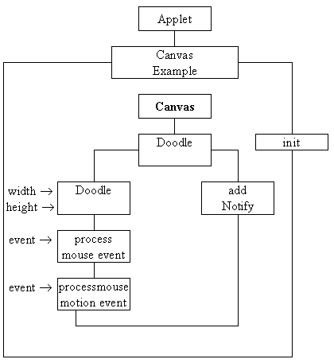

The CanvasExample class diagram

The CanvasExample class contains an encapsulated extended Canvas class
called Doodle. The Doodle class constructor creates a Canvas
of the size indicated by its arguments and enables mouse events upon itself.
This will cause the processMouseEvent() and processMouseMotionEvent()
actions to be called as appropriate.
This technique differs from the registration of listeners and should be used
where an extension of an existing class is required, rather than simply using
an instance in an interface.